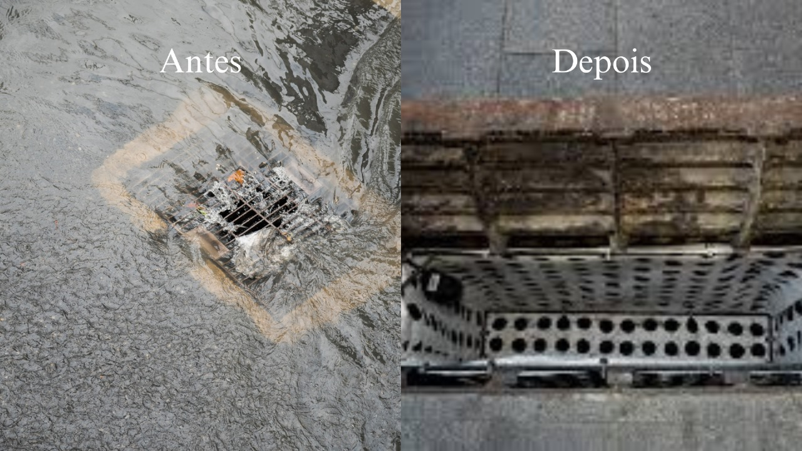

Temos como principal objetivo mitigar os impactos causados por bueiros entupidos em áreas urbanas, especialmente os alagamentos e os diversos prejuízos sociais, econômicos e ambientais que eles acarretam. A proposta busca oferecer uma solução prática e acessível por meio da aplicação de tecnologias inteligentes voltadas à coleta de resíduos e ao monitoramento em tempo real. Para isso, será desenvolvida uma estrutura de cestas coletoras instaladas no interior dos bueiros, com a função de reter materiais sólidos descartados de forma inadequada nas vias públicas, como plásticos, folhas, embalagens e outros resíduos que frequentemente obstruem o sistema de drenagem urbana. Além da barreira física proporcionada pelas cestas, o sistema contará com sensores de nível, responsáveis por medir a quantidade de resíduos acumulados e identificar o momento em que a cesta atinge sua capacidade máxima. Esses sensores estarão conectados a um sistema de transmissão de dados que enviará alertas automáticos a uma central de monitoramento, permitindo que os órgãos públicos, como prefeituras ou secretarias de obras, sejam informados de forma imediata e possam agir preventivamente, realizando a limpeza antes que ocorram entupimentos e alagamentos. A proposta também inclui a coleta e organização de dados sobre a frequência dos acúmulos, os pontos mais afetados e a eficiência das limpezas realizadas, criando um banco de dados útil para o planejamento urbano e ações futuras.
Além de resolver um problema técnico, o projeto também possui caráter educativo e ambiental, ao contribuir indiretamente para a conscientização da população sobre a importância do descarte correto de lixo e da preservação dos espaços públicos. O uso de tecnologias baseadas em Edge Computing reforça a viabilidade da proposta, oferecendo um modelo de baixo custo, escalável e adaptável para diferentes realidades urbanas. Assim, este projeto pretende apresentar uma solução inovadora, preventiva e sustentável, que pode transformar a forma como os municípios lidam com a limpeza e manutenção dos bueiros, promovendo cidades mais limpas, seguras e resilientes diante das chuvas cada vez mais intensas provocadas pelas mudanças climáticas.